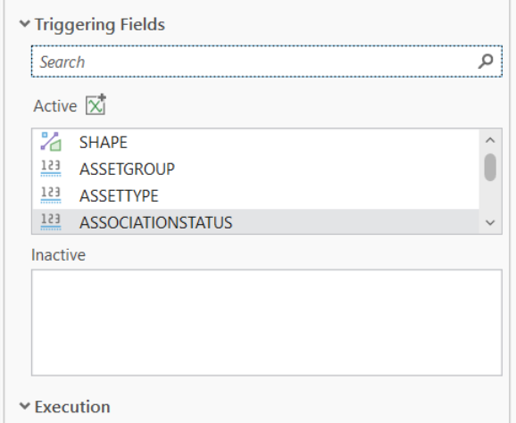
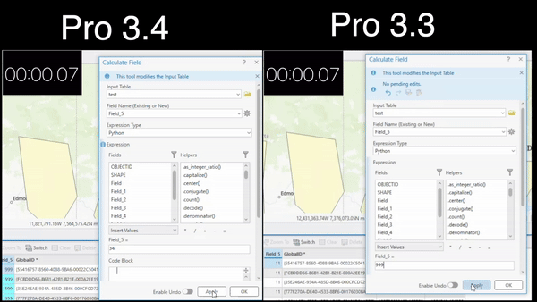
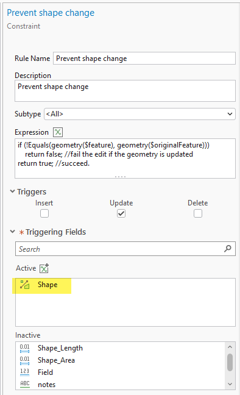

Boas práticas em Attribute Rules, parte 1: Triggering Fields no ArcGIS Pro
Cálculos e restrições executados apenas quando necessário.
O problema: regras que correm sempre
Desde o ArcGIS Pro 2.1 que as regras de atributo imediatas (de cálculo e de restrição) são uma das ferramentas mais úteis para garantir qualidade de dados no momento da edição. Mas tinham um custo escondido: numa classe com regras de update, alterar qualquer campo fazia correr todas essas regras.
Mudar uma observação de texto disparava o recálculo do comprimento, a validação do material e a consulta à tabela de manutenções. Numa edição pontual nota-se pouco. Numa atualização em massa de milhares de registos, ou num processo automático que mexe em campos de sistema, o tempo de execução cresce sem necessidade.
O ArcGIS Pro 3.4 (em par com o ArcGIS Enterprise 11.4) trouxe a resposta: os triggering fields. Neste artigo explico o que são, como se configuram no Pro e em Python, e mostro alguns exemplos em Arcade.
O que são os triggering fields

Os triggering fields são uma lista de campos que decide quando uma regra imediata corre num evento de update: a regra só é avaliada se pelo menos um desses campos tiver sido alterado. Aplicam-se a regras de cálculo e de restrição e foram introduzidos no ArcGIS Pro 3.4.
Há um equívoco comum que vale a pena desfazer. Numa regra de cálculo indica-se o campo a calcular, e muitos assumem que a regra só corre quando esse campo muda. No entanto não é isso que acontece: até ao 3.3, a regra corria em qualquer update do registo, independentemente do campo editado.
Três pontos sobre o comportamento:
- Por omissão, todos os campos estão selecionados. Uma regra nova ou migrada comporta-se exatamente como antes, por compatibilidade. O ganho só aparece quando se reduz a lista.
- Só afetam o evento Update. Insert e Delete continuam a disparar a regra como sempre.
- Não se aplicam a regras batch (cálculo em batch e validação), que são avaliadas no momento da validação e não durante a edição.
O impacto pode ser grande. No exemplo publicado pela Esri, uma regra de restrição sobre a geometria, configurada para disparar só no Shape, fez cair um Calculate Field num campo de notas em 20 000 registos de mais de um minuto (Pro 3.3) para menos de cinco segundos (Pro 3.4) (fonte).

Configurar no ArcGIS Pro
A configuração faz-se na vista de Attribute Rules, ao criar ou editar uma regra imediata:
- No painel Catalog, clicar com o botão direito na classe e escolher Data Design > Attribute Rules.
- Criar ou abrir uma regra de cálculo ou de restrição e marcar o evento Update. A lista de Triggering Fields aparece, com todos os campos selecionados.
- Usar o botão Add from script: o Pro analisa a expressão Arcade e acrescenta os campos lidos através de
$feature. É um bom ponto de partida, mas não dispensa revisão. - Retirar da lista os campos que não influenciam o resultado da regra e guardar.

Antes de guardar, confirme a lista final: o objetivo é ficar só com os campos que de facto mudam o resultado da regra, não com todos os que já lá estavam.
Exemplos práticos em Arcade
A regra de ouro: os triggering fields de uma regra são os campos de $feature de que o resultado depende. Três casos típicos.
1. Comprimento calculado (cálculo)
Depende apenas da geometria, por isso só deve correr quando o Shape muda.
// Campo: COMPRIMENTO | Triggering fields: SHAPE
return Round(Length($feature, 'meters'), 2);2. Etiqueta a partir de atributos (cálculo)
Depende do material e do diâmetro. Alterar observações, estado ou data de inspeção não tem de recalcular a etiqueta.
// Campo: ETIQUETA | Triggering fields: MATERIAL;DIAMETRO
var mat = DomainName($feature, 'MATERIAL');
var dn = $feature.DIAMETRO;
if (IsEmpty(mat) || IsEmpty(dn)) return null;
return mat + ' DN' + Text(dn);3. Impedir mover elementos existentes (restrição)
Compara a geometria atual com a original. Sem triggering fields, esta comparação corria a cada edição de qualquer atributo, para devolver sempre true.
// Triggering events: UPDATE | Triggering fields: SHAPE
if (Equals(Geometry($feature), Geometry($originalFeature))) {
return true;
}
return {
'errorMessage': 'Não é permitido mover elementos já existentes.'
};E um caso a ter cuidado: regras que leem outras tabelas com FeatureSetByName. Os triggering fields olham só para os campos do próprio registo. Se a regra depende de um campo que identifica o registo relacionado (por exemplo, o código da zona de abastecimento), esse campo tem de estar na lista.
Boas práticas, armadilhas e compatibilidade
- Rever as regras existentes depois de atualizar. Regras criadas antes do 3.4 ficam com todos os campos selecionados e não ganham nada sozinhas. A Esri recomenda revê-las uma a uma.
- Uma lista curta demais é pior do que uma longa. Se faltar um campo de que a regra depende, o valor calculado fica desatualizado sem qualquer aviso. Testar sempre com edições representativas antes de passar a produção.
- Serviços precisam de ArcGIS Enterprise 11.4 ou superior. Uma classe configurada no Pro 3.4 e publicada em 11.3 funciona, mas o servidor ignora a propriedade e a regra volta a disparar em todos os campos.
- A geodatabase não precisa de ser atualizada. Segundo a Esri, uma geodatabase de release anterior (por exemplo 11.3) beneficia na mesma da funcionalidade.
- Insert e Delete não mudam. Cargas de dados são inserts e continuam a disparar as regras; para essas, a opção continua a ser desativar a regra durante a carga.
- Utility Network. Excluir o subnetwork name, o isconnected e os campos propagados evita que as regras disparem durante o Update Subnetwork, com ganhos grandes quando há eventing ativo.
As três notas de compatibilidade vêm das respostas da Esri no artigo original.
Conclusão
Os triggering fields são uma alteração pequena na configuração com um efeito grande no desempenho: cada regra passa a correr só quando os dados de que depende mudam. Para quem tem modelos com dezenas de regras, ou faz atualizações em massa com frequência, rever as listas de campos é das otimizações com melhor relação esforço/resultado no ArcGIS Pro 3.4 e posteriores.
O ponto de partida é simples: escolher a regra mais pesada do modelo, reduzir a lista aos campos que ela usa e medir a diferença num Calculate Field.
Fontes
- Attribute Rules Triggering Fields in ArcGIS Pro 3.4, ArcGIS Blog
- Add Attribute Rule, documentação ArcGIS Pro
- Alter Attribute Rule, documentação ArcGIS Pro
Publicado originalmente no LinkedIn a 21 de outubro de 2026.